異動を知った日の夜、23:48
好きだと言えないまま、
彼が遠くへ行ってしまう。
彼はいつも優しい。でも、強引に距離を縮めてくることはない。彼の異動まであと1か月。美香は「年上の私が本気になったら重いかも」と、気持ちを言えずにいました。
美香が本当に知りたかったのは——
- 1彼の優しさは、私だけに向けられたものなのか
- 211歳の年齢差を、彼はどう感じているのか
- 3何も言わずに別れて、本当に後悔しないのか
11歳年下の同僚を、
好きになってしまった。
年上の自分に自信が持てない美香と、年下の自分では頼りなく見えると思う玲。二人が同じ一歩をためらっていた、両片思いの創作ストーリーです。
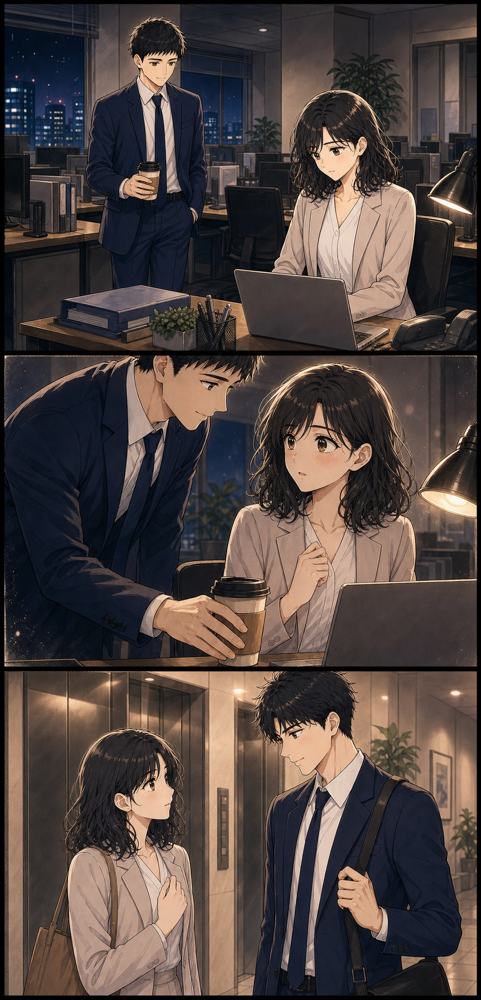
気づけば、仕事へ行く理由の中に、玲くんに会えることが混じっていた。
玲美香さん、お疲れさまです。これ、甘くない方ですよね
美香覚えててくれたの？ ありがとう。ちょうど眠くなってきたところ
玲やっぱり。美香さん、集中すると休憩しないから
玲くんと帰れる夜は、それだけで少し特別だった。
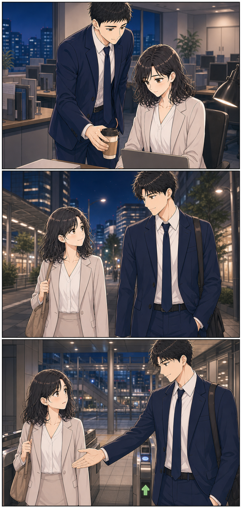
玲迷惑じゃなければ、今日も駅まで一緒に帰りませんか？
美香うん。私ももう少しで終わるから、待ってて
玲美香さんと帰ると、駅まで早く感じます
美香私も。玲くんと話してると、仕事の疲れを忘れる
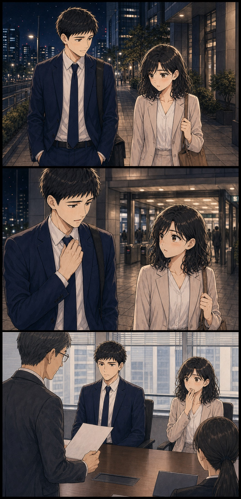
美香どうしたの？
玲美香さん。実は僕……
玲いえ、ちゃんと決まってから話します
翌朝、その言葉の意味を、私は別の人の口から知った。
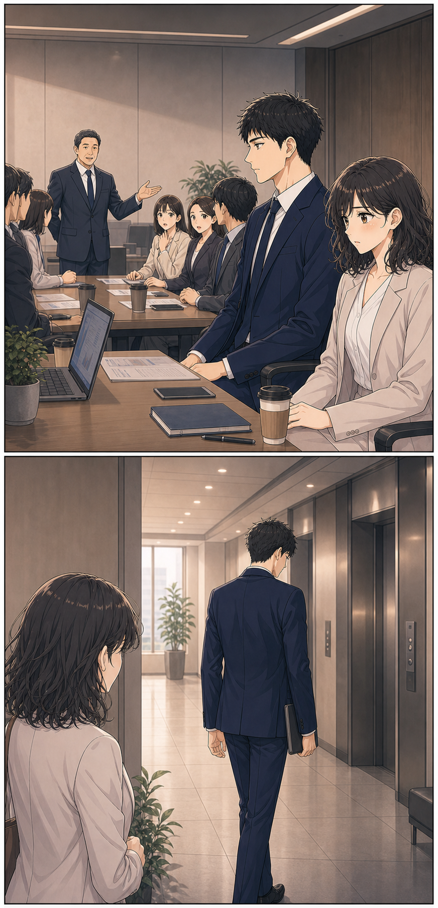
同僚玲くん、来月から大阪支社だって。先週、内示が出てたみたい
美香……来月から？
あと1か月で、会えなくなる。
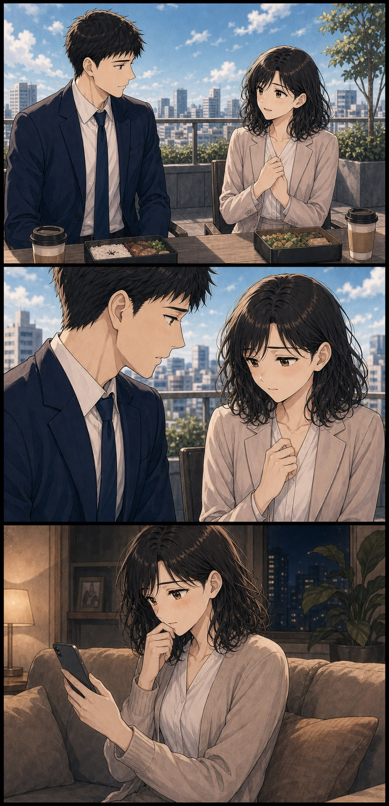
玲急に決まって。昨日、ちゃんと伝えたかったんです
美香謝らないで。異動は喜ばしいことでしょ
玲でも、美香さんには自分から伝えたかったから
玲大阪に行っても、たまに連絡していいですか？
美香もちろん。仕事の相談でも何でも
玲仕事じゃなくても……迷惑じゃなければ
美香迷惑なわけないよ
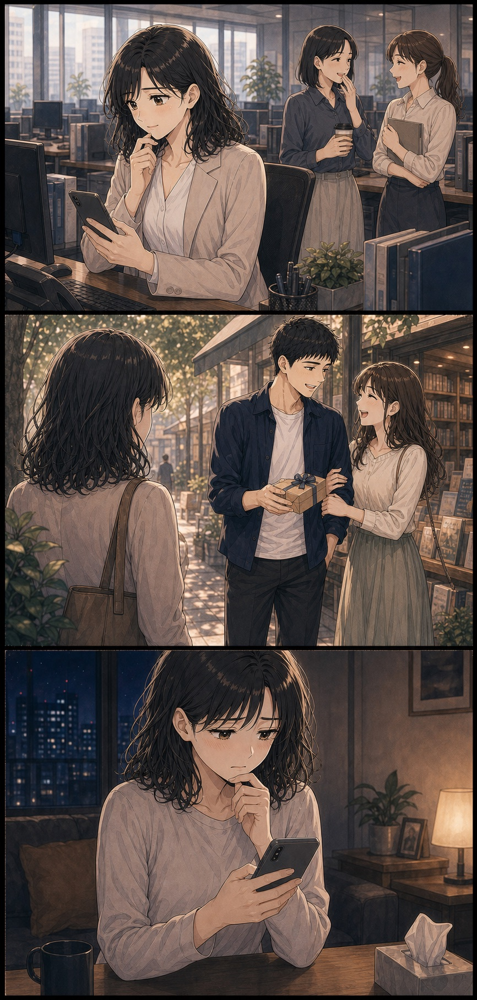
美香二人で……。これって、少しは期待してもいいのかな
同僚玲くんって彼女いるのかな。あれだけ素敵なら、いてもおかしくないよね
美香そうだよね。私よりずっと若い人の方が、玲くんには似合うよね
……彼女、いたんだ。期待した自分が恥ずかしい。
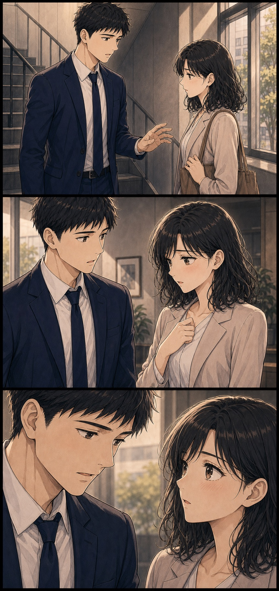
玲美香さん、最近僕を避けてませんか？
美香違うの。この前の人、彼女だと思って……
玲あれは妹です。誕生日の買い物に付き合っていました
美香妹さん……？ ごめんね、勝手に勘違いして
玲少しは、僕のことを気にしてくれたってことですか？
それは……。好きだから気になったなんて、まだ言えなかった。
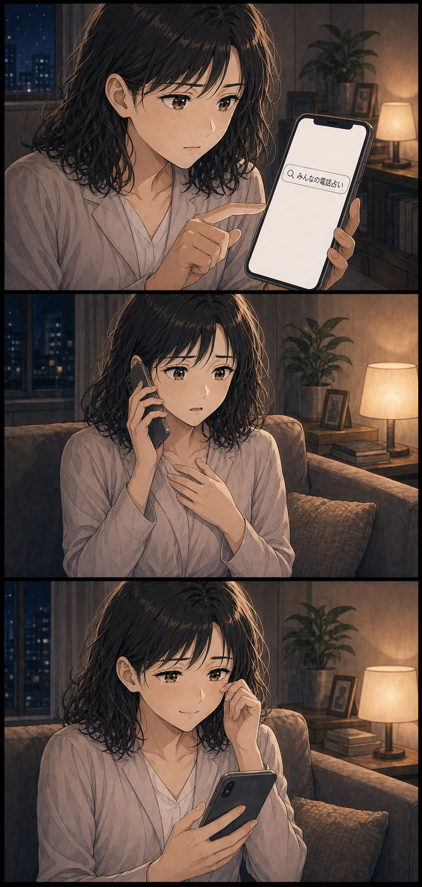
美香職場に11歳年下の人がいて、その人のことが気になっています
先生そうなんですね。どんなところに惹かれたんですか？
美香優しくて、私のことをよく見てくれていて。一緒にいると自然に笑えるんです
先生その方と、これからどうなりたいですか？
美香本当は、離れてもつながっていたいです
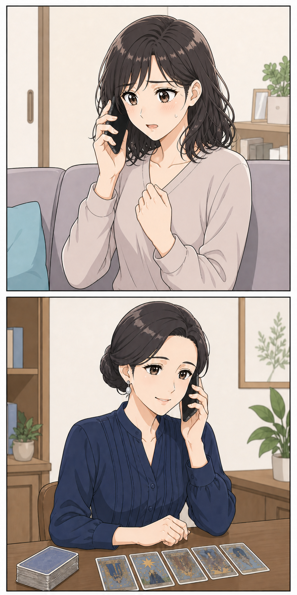
美香でも、年上の私が本気になったら、重いと思われそうで……
先生一番怖いのは、断られること？ それとも、何も言えずに離れること？
美香……何も言えないまま終わることです
先生すぐに告白しなくても大丈夫。まずは、彼が言いかけていたことを聞いてみましょう
美香聞くだけなら、私にもできるかもしれません
気持ちを声にしたら、私が本当はどうしたいのか、少しだけ見えてきた。
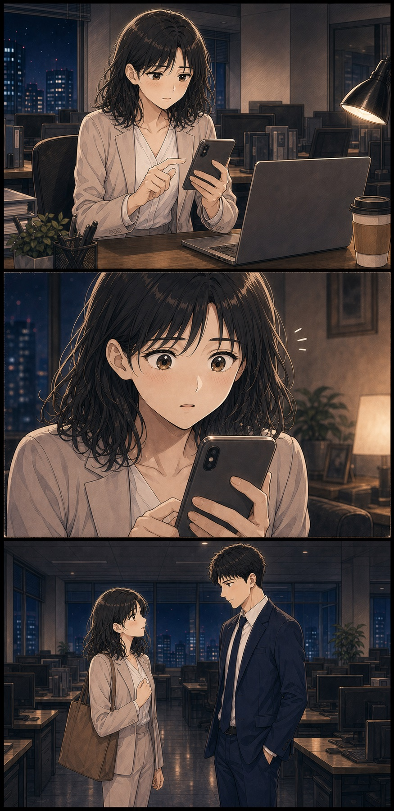
未来は分からない。それでも、何も言わずに終わるのは嫌だった。
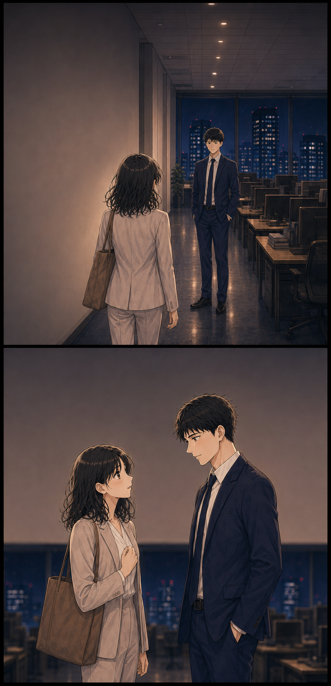
美香玲くん。帰る前に、少しだけ時間もらえる？
玲はい。僕も、美香さんに話したいことがあります
美香怖くなって避けて、ごめんね。本当はずっと話したかった
玲僕も、諦めようとしていました。でも、できませんでした
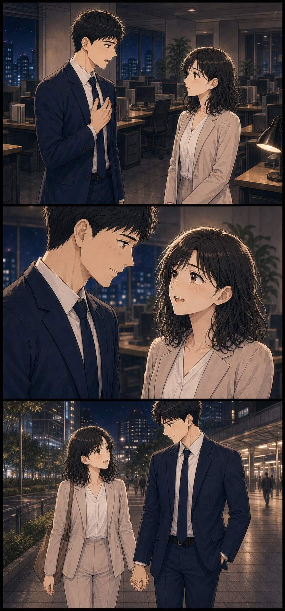
玲美香さんが好きです。何も言わずに離れる方が嫌でした
美香私も玲くんが好き。年上の私じゃ、負担になると思ってた
玲負担なんかじゃありません。僕は年下だから、頼りなく見えると思っていました
美香私たち、同じようなことを心配してたんだね
玲まずは、今度こそ二人で食事に行ってくれますか？
美香もちろん。今度は断らないよ
二人を止めていたのは年齢差ではなく、相手を困らせたくないという、同じ怖さだった。
未来の答えをもらったから、動けたわけではない。誰にも言えなかった気持ちを話したことで、美香は自分が本当はどうしたいのかに気づけました。
まだ答えを出せていなくても、今の気持ちから話していい。
「こんなことで相談してもいいのかな」と迷っていても大丈夫。片思いや年の差など、得意な相談内容や口コミから先生を探せます。
無料会員登録で初回3,000円OFF今の気持ちを話せそうな先生を見る→※別途通話料がかかります。クーポンの利用条件は公式サイトでご確認ください。※本作品は成人同士の片思いと電話相談を題材にした創作ストーリーです。感じ方や結果には個人差があります。LOVE TYPE CODE
この片思い、どうしたい？
「言えない恋」診断
10枚のカードから見えてくる、
片思いで隠している気持ちと迷い。
今の恋愛タイプを確かめてみませんか？
診断をせず、すぐに相談先を探したい方はこちら
無料会員登録で初回3,000円OFF今の悩みを相談できる先生を見る→ ※別途通話料がかかります。クーポンの利用条件は公式サイトでご確認ください。彼のちょっとした優しさを、何度も
思い返してしまう
返信が来るか気になって、つい
スマホを確認してしまう
もっと話したいのに、彼の前では
平気なふりをしてしまう
年齢や立場を考えて、自分から
恋を諦めようとしている
忘れようと思っても、会うたびに
また好きになってしまう
何気ない会話の意味を、あとから
何度も考えてしまう
二人の未来を想像すると、嬉しさより
不安のほうが先に浮かぶ
このまま友達でいるか伝えるか、
何度も同じところで迷う
少しでも会えるなら、自分の予定を
後回しにしてしまう
伝えたい言葉を考えたのに、最後は
言わずに飲み込んでしまう
10の回答から4つの恋愛傾向を分析中。
あなたの恋愛コードを導いています……
10の回答から見えた、あなたの恋愛タイプは……
彼の言葉を信じて
待ちすぎタイプ
片思いは相手との関係を壊したくないぶん、一人で考え続けてしまいがちです。
電話占いは未来を決めてもらうだけでなく、彼のこと、自分のこと、これからの選択肢を言葉にして整理するためにも利用できます。
無料会員登録で
初回 3,000円OFF クーポン進呈美香の物語から見えたこと
欲しかったのは、誰かの正解より自分の本音を話せる時間。
美香は最初、「年上の自分を玲が恋愛対象として見てくれるか」を知りたいと思っていました。
でも、玲もまた「年下の自分では頼りなく見える」と思い、強く踏み込めずにいました。二人を遠ざけていたのは年齢そのものではなく、相手を困らせたくない気持ちだったのです。
占いが未来を決めたわけではありません。言葉にしたことで、美香は年齢を理由に自分の気持ちを否定せず、正直に伝える選択ができました。
※上記は40代女性の年下同僚への片思いを題材にした創作ストーリーです。
聞きたいことはメモでOK
彼の気持ち、年齢差への不安、私が本当に伝えたいこと。
口コミを見ながら、話しやすそうな先生を選ぶ
片思いや年の差恋愛を得意とする先生から探せました。
いきなり告白を決めなくていい
まずは気持ちを話してみる。それくらいの一歩から始めました。
ちょっと安心できたポイント
電話占いって少し不安。
でも、私にも使えそう。
いきなり申し込むのではなく、まずは気になることをちょっと調べてみました。運営元がちゃんとわかる
プライム市場上場グループが運営していると知って、少し安心できました。
悩みに合いそうな先生を探せる
復縁や相手の気持ちなど、得意な相談と口コミから選べます。
初めてなら、お得に試せる
無料会員登録で初回3,000円OFF。まずは先生と特典の内容を見てから決めてもよさそうです。
※別途通話料がかかります。クーポンの利用条件は公式サイトでご確認ください。
話す前のちょっとした準備
話す前に、これだけメモしておくと安心
- 1
聞きたいことをメモする
いちばん知りたいことから順番をつけます。
- 2
先生の得意分野を見る
自分の悩みに近い相談内容や口コミに目を通します。
- 3
今日はここまでと決める
話したい範囲を先に決めておくと安心です。
申し込む前に気になったこと
気になることは、先に調べておきました。
初回特典はどう使う？
特典ごとに使える条件や期限が違うので、先に公式サイトを見ておくと安心です。
先生はどう選ぶ？
復縁などの得意分野と口コミを見て、「話しやすそう」と思える先生から探せます。
相談内容を周囲に知られない？
個人情報の扱いは公式サイトに載っています。気になるときは、先に目を通しておくと安心です。
結果は必ず当たる？
必ず当たるものではありません。未来を決めてもらうのではなく、気持ちを整理するきっかけとして考えています。
何を話せばいいか不安
今の状況と聞きたいことを簡単にメモしておくと、話し始めやすくなります。
ここまで読んだ私へ
今すぐ答えを出さなくても大丈夫。まずは、どんな先生がいるか見てみることにしました。